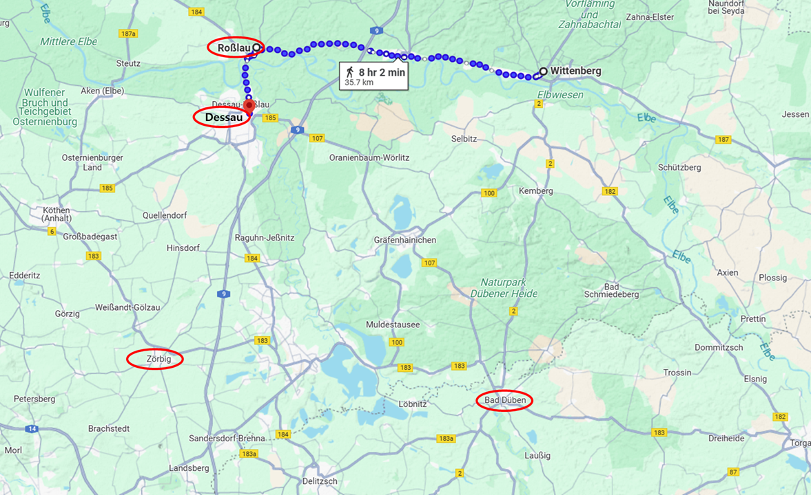
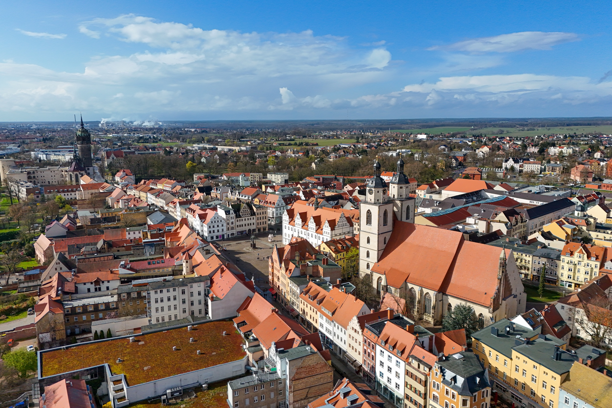
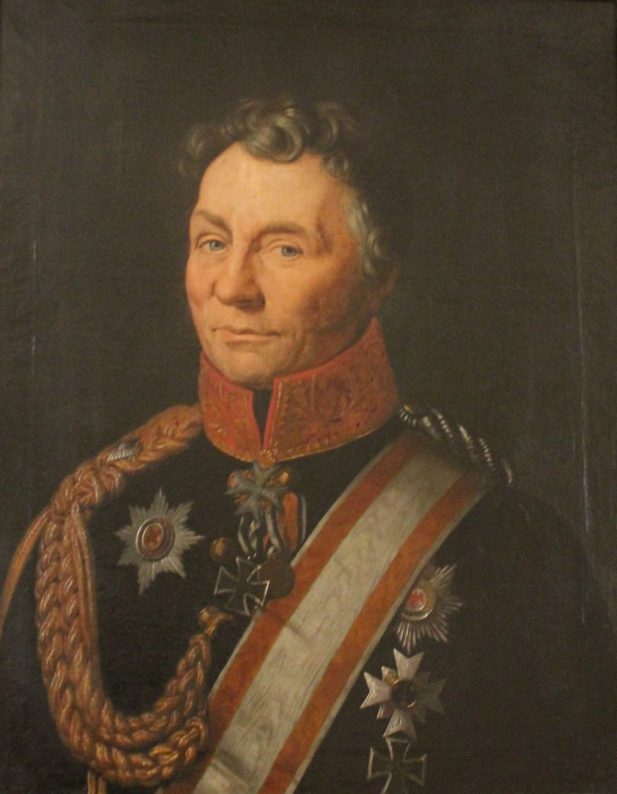
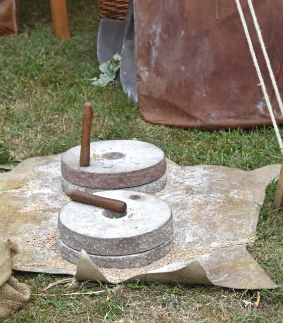
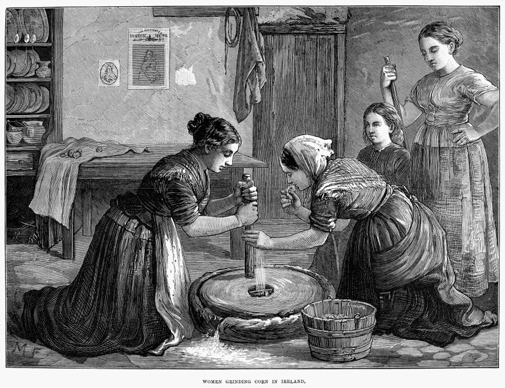
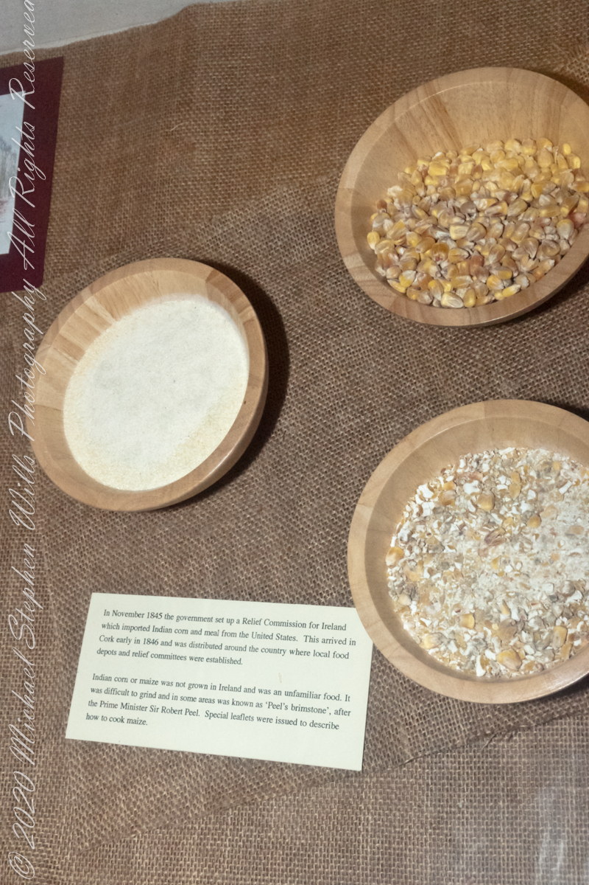
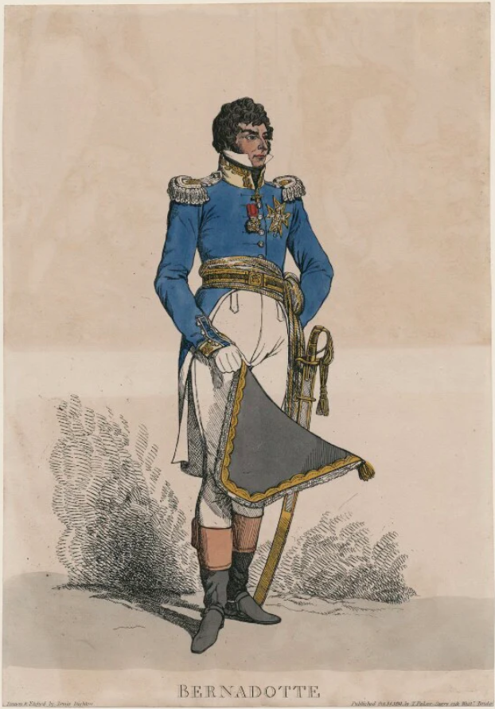

라이프치히로 가는 길 (25) - 집착이 모든 것을 망친다
게시: 2025-04-21T06:30:52+09:00
전장을 작센에서 브란덴부르크로 옮겨버리기 위해 엘베강 우안으로 건너가겠다는 결정을 내리긴 했지만, 여전히 나폴레옹에게 절실하게 필요했던 것은 정보였습니다. 일단 블뤼허건 베르나도트건 대체 적군이 어디에 있는지 알아야 공격을 하든 말든 할텐데, 그들의 행방이 여전히 묘연했습니다. 더욱 혼란스럽게도, 사방으로 풀어놓은 척후들과 간첩으로부터 들어오는 정보가 제각각이었습니다. 그나마 몇몇 첩보를 종합해본 결과로는, 블뤼허는 강을 건넜던 교두보인 바르텐부르크가 아니라 베르나도트의 교두고가 있는 데사우로 간 것 같았습니다. 특히 모크레나에서 용하게 후퇴했던 자켄도 데사우에서 블뤼허의 본대와 합류했다는 소식도 들어왔습니다. 상식적으로도 블뤼허가 바우첸에서 바르텐부르크까지 5일간이나 북서쪽으로 강행군한 이유는 베르나도트와 합세하기 위한 것이었을 테니, 베르나도트와 함께 엘베강을 건너 후퇴하는 것이 그럴싸하긴 했습니다. 나폴레옹이 엘베강 우안으로 건너간다고 결정하긴 했지만, 그의 진짜 목표는 할 수만 있다면 아직 슈바르첸베르크와 합류하지 못한 상태의 블뤼허-베르나도트를 포착하여 패배시키는 것이었습니다. 그래서 그는 여기서 또 하나의 묘안을 냅니다. 레이니에의 제7군단을 그대로 비텐베르크로 보내 거기를 포위하고 있던 프로이센군을 몰아내도록 한 뒤, 레이니에로 하여금 강을 건너 엘베강 우안을 따라 하류로, 즉 북서쪽에 얼마 떨어지지 않은 로쓸라우로 진격하게 한 것입니다. 또 네로 하여금 로쓸라우의 강 건너편에 있는 데사우로 진격하게 했습니다. 그러니까 레이니에로 하여금 엘베강 우안의 로쓸라우를 틀어막는 모루 역할을 하게 하고, 데사우에서 엘베강을 건너느냐 마느냐 망설이고 있을 블뤼허-베르나도트를 내리치는 망치 역할을 네에게 준 것입니다.

(비텐베르크에서 엘베강 하류로 약 30km 떨어진 지점에 로쓸라우가 있습니다. 로쓸라우는 엘베강 우안에, 맞은 편의 좌안에는 데사우가 있습니다. 하지만 여러분은 다들 아시다시피 블뤼허는 10월 11일 아침, 북쪽 데사우가 아니라 서쪽 저비히에 있었고, 그나마 이미 더 서쪽의 베틴(Wettin)을 향해 출발하고 있었습니다.)

(비텐베르크의 오늘날의 모습입니다. 왼쪽 배경에 보이는 검은 탑을 가진 건물이 슐로스키어셔(성채 교회, Schlosskirche, 영어로는 castle church)이고, 오른쪽에 보이는 2개의 종탑이 딸린 건물이 슈타트키어셔(도시 교회, Stadtkirche, 영어로는 city church)입니다. 비텐베르크는 마르틴 루터가 종교개혁을 시작한 도시로서, 공식 명칭에 Lutherstadt (루터의 도시)라는 이름이 들어가는 2개 도시 중 하나입니다.)
레이니에의 비텐베르크 해방 작전은 별다른 문제 없이 원활하게 진행되었습니다. 그의 제7군단이 비텐베르크의 다리를 통해 엘베강을 건너자, 비텐베르크를 둘러싼 참호 속에서 그 모습을 지켜보던 튀멘(Heinrich Ludwig August von Thümen)의 프로이센군은 중과부적이라고 판단하고는 신속하게 로슬라우 방면으로 후퇴했기 때문이었습니다. 이미 해도 지고 비가 내리는데다 강행군에 워낙 지친 제7군단은 그 뒤를 추격하지 못했습니다. 뿐만 아니라 오랜 시간 동안 포위되었던 요새 비텐베르크를 해방시키면서 풍부한 식량에 대한 기대도 꽤 있었는데, 그것도 실망스러웠습니다. 장기 포위에도 견딜 수 있게 큰 창고를 가지고 있던 비텐베르크에는 실제로 곡물이 잔뜩 저장되어 있긴 했는데, 정작 빵을 구울 수 있는 밀가루는 거의 없었고, 곡물을 제분할 맷돌도 거의 없었기 때문이었습니다. 그러니까 비텐베르크의 수비대는 몇 개 안 되는 맷돌로 자신들이 매일 소비할 밀가루만 손으로 갈아서 제분하고 있었던 것입니다. 이건 실은 정상적인 일이었습니다. 밀가루는 변질되기 쉬웠으므로 당시 대부분의 군대는 장기 저장용 군량은 껍질을 벗기지 않은 낱알 형태의 곡물로 보관하는 것이 일반적이었습니다. 다만 대부분의 요새가 강가에 있었으므로, 거기에 물레방아 같은 것을 두어 필요시 대규모로 제분을 하는 것이 보통이었는데, 무슨 이유에서인지 비텐베르크에는 물레방아를 이용한 제분소가 없었던 모양입니다.

(당시 비텐베르크를 포위하고 있던 튀멘 장군입니다. 그는 당시 56세였는데, 유서 깊은 귀족 가문 출신이고 어려서부터 군 생활을 했음에도, 48세에야 중령으로 승진하는 등 굉장히 승진이 느렸습니다. 그는 1812년 나폴레옹의 러시아 패전 이후에야 장군으로 승진했지만, 이후 뤼첸 전투와 덴너비츠 전투에서 공을 세워 소장 계급까지 달았습니다. 다만 그의 활약은 딱 거기까지여서 이후엔 별다른 공로를 세우지 못했고, 로쓸라우에서 타우엔치언과 함께 베를린 방면으로 후퇴한 이후 더 이상 실전에 투입되지 않았습니다. 그는 1820년 전역하여 두둑한 연금을 받으며 잘 살다가 69세에 병사했습니다.)

(이 사진은 고대 로마군단병들이 사용하던 mola manualis (영어로는 mill manual), 즉 손으로 돌리는 맷돌입니다. 우리의 전통 맷돌과 거의 똑같습니다.)

(이 석판화는 1874년 밀가루를 맷돌로 갈아 밀가루를 만드는 아일랜드 여인들을 묘사한 것입니다. 그러니까 동양이나 서양이나 고대에 만들어진 맷돌은 거의 그대로 이어진 셈입니다. 그만큼 이미 고대 시절에 더 고칠 부분이 없을 정도로 형태가 완성되었다는 소리지요.)

(쌀을 주식으로 하는 동양사람들은 곡식은 있지만 맷돌이 없어서 굶어죽는다는 소리가 이해가 되지 않을 것입니다. 그러나 탈곡 과정에서 부스러질 수 밖에 없고, 그래서 더더욱 가루를 내어야만 빵을 굽든 죽을 쑤든 할 수 있는 밀을 주식으로 하는 사회에서는 맷돌이 없다는 것은 큰 문제였습니다. 19세기 중반 감자 잎마름병으로 인한 아일랜드 대기근 때도, 영국 정부가 급한 대로 아메리카 대륙에서 옥수수를 구호식품으로 아일랜드에 보냈으나, 옥수수 알갱이를 대량으로 제분할 시설이 없어서 많은 아일랜드인들이 결국 굶어죽었다는 기록이 있습니다. 여전히 우리로서는 잘 이해가 가지 않는 이야기인데. 이는 실은 옥수수(Indian corn, maize)라는 곡물에 익숙하지 않았던 아일랜드인들이 이걸 어떻게 먹어야 하는지 몰랐기 때문이기도 합니다. 아일랜드인들은 영국인들이 구호식품이랍시고 보낸 이 의심스러운 누런 곡물을 당시 수상이던 Peel의 이름을 따서 Peel's Brimstone, 즉 필의 유황이라고 불렀습니다.) 그래도 10월 10일~11일 밤 사이에 바트 뒤벤의 나폴레옹에게 날아드는 보고서들은 매우 좋은 소식들 뿐이었습니다. 비텐베르크의 포위도 순조롭게 풀렸고, 데사우에서도 네가 연합군을 격파하고 데사우를 점령했습니다. 연합군은 약 1천5백의 포로를 남긴 채 도주하며 엘베강을 건넌 뒤 다리를 파괴했는데, 나폴레옹은 이 소식을 뮈라에게 전하며 또 2천5백의 포로라고 숫자를 간단히 부풀렸습니다. 곧 강 건너편의 로쓸라우도 레이니에가 점령할 것이 확실해보였습니다. 만약 로쓸라우에서 연합군이 강경하게 저항하려고 한다면, 데사우에서 부교를 놓고 막도날의 제11군단과 제1기병군단을 더 투입할 수 있었습니다. 특히 남쪽 라이프치히 전선에서 도착한 뮈라의 보고서가 압권이었습니다. 그 보고서에 따르면 뮈라는 라이프치히로부터 약 30km 남쪽인 보르나(Borna)에서 비트겐슈인의 러시아군과 교전했는데, 뮈라가 쾌승을 거두어 비트겐슈타인은 슈바르첸베르크와 함께 더 남쪽인 프로부르크(Frohburg)로 후퇴했습니다. 문제는 블뤼허-베르나도트의 주력이 데사우에 없었다는 것이고, 더 나쁜 문제는 대체 이들이 어디로 갔는지가 더욱 혼란스럽다는 점이었습니다. 거의 아무말 대잔치식으로 날아드는 온갖 첩보에 따르면, 어떤 이는 연합군이 남쪽의 할러(Halle)로 갔다고 주장했고 어떤 이는 엘베강을 건너 북쪽으로 갔다고 했습니다. 그런 이야기들을 종합해본 뒤, 나폴레옹은 베르나도트는 엘베강을 건너 북쪽으로 후퇴했고, 블뤼허는 남쪽 할러로 향했다고 결론을 내렸습니다. 물론 이는 잘못된 정보에 기인한 잘못된 결론이었지만, 일단 그렇게 결론을 내리자 나폴레옹은 자신이 최근에 내린 결정, 즉 전군을 이끌고 엘베강 우안으로 건너가 브란덴부르크로 향한다는 계획이 매우 잘된 결정이라고 확신하게 되었습니다. 특히 성가신 블뤼허가 남서쪽의 할러로 후퇴했으니 이제 엘베강 우안에서 불과 4만 정도의 병력만 가졌을 것으로 추정되는 베르나도트를 상대하기가 더욱 쉬워졌습니다. 그러니 이제 전부터 벼르고 있던 베르나도트를 추격하여 브란덴부르크로 진입하면 되는 것이었습니다. 나폴레옹은 10월 11일에도 활발히 명령서를 날려 전군을 데사우 방면으로 달려가도록 했습니다. 나폴레옹은 8월 휴전 종료 이후부터 참전한 베르나도트에 대해 유독 개인적인 감정을 가지고 있었습니다. 생각해보면 블뤼허가 이렇게 바르텐부르크까지 대이동을 한 이유가 베르나도트의 멱살을 쥐고 나폴레옹에게 진격하기 위함이었던 것에서 알 수 있듯이, 베르나도트는 개전 이후에도 정말 소극적으로 행동했으며 결코 먼저 나폴레옹을 건드리지 않았습니다. 그러니 나폴레옹으로서는 베르나도트를 견제하기 위해 1~2개 군단만 엘베 강변에 배치해두고 블뤼허와 슈바르첸베르크에게 집중할 수도 있었습니다. 그러나 베르나도트를 향해 먼저 공세를 취한 것은 언제나 나폴레옹이었습니다. 우디노를 먼저 보냈다 그로스베어런의 패배를 겪었고, 이어서 네를 보냈다가 덴버비츠의 굴욕을 당했습니다. 사실 이렇게 두 번 연속으로 자신의 에이스급 원수들이 패배했다면 베르나도트의 실력을 인정해야 했습니다. 실제로도 나폴레옹을 괴롭힌 트라헨베르크 의정서의 저자도 베르나도트였고, 최근 2연패를 안겨준 것도 베르나도트였으며, (아직 나폴레옹은 몰랐지만) 엘베강이 아니라 멀더강을 건너 후퇴함으로써 나폴레옹을 물먹인 것도 베르나도트였습니다. 결국 3개 방면군 중에서는 베르나도트가 나폴레옹에게 가장 큰 고통을 주었던 것입니다. 그런데도 나폴레옹은 과거부터 쌓여왔다가 바그람 전투에서 폭발했던 사적인 감정에 사로잡혔는지, 끝까지 베르나도트를 실력도 없는 겁장이라며 평가절하했습니다.

(사람은 사회적인 동물이라서, 애정이든 증오이든 결국 사람에게 집착하는 법입니다. 그런 점에서 나폴레옹도 자신의 생각과는 달리 그냥 평범한 인간에 불과했습니다. 이 판화 속에서 베르나도트는 엄청나게 큰 이각모를 들고 있네요.)
그런데, 베르나도트를 그렇게 엘베강을 건너 도망친 겁장이로 평가절하했다면 그냥 도망치게 내버려두고 그대로 전군을 돌려 진짜 승부가 벌어질 라이프치히로 달려가는 것이 맞는 것 아니었을까요? 어차피 일단 블뤼허-베르나도트를 잡는데는 실패했고 대신 (알고 보니 아니었지만) 하나는 엘베강 너머로, 다른 하나는 멀더강 너머로 쫓아버렸으니 소기의 목적은 이미 달성한 것이었습니다. 그러니 아직 슈바르첸베르크가 고립된 지금, 빨리 전군을 이끌고 그를 치러 가는 것이 옳았습니다. 나폴레옹이 황제의 자리까지 오른 것은 빠른 발로 기동전을 펼쳐 분산된 적군을 적시에 들이쳤기 때문이었고, 따라서 나폴레옹 전술의 핵심은 시간과 공간을 어떻게 활용하느냐에 있었습니다. 하지만 베르나도트에게 패배의 쓴 맛을 보여주겠다는 이상한 집착은 나폴레옹으로 하여금 전군을 정반대인 북쪽으로 달리게 했고, 그 결과 시간과 공간이 허무하게 낭비되고 있었습니다. 그러나 바로 다음날인 10월 12일 아침 9시, 나폴레옹에게 불길한 편지가 하나 날아들었습니다. Source : The Life of Napoleon Bonaparte, by William Milligan Sloane Napoleon and the Struggle for Germany, by Leggiere, Michael V With Napoleon's Guns by Colonel Jean-Nicolas-Auguste Noël https://www.britannica.com/event/Napoleonic-Wars/Dispositions-for-the-autumn-campaign https://www.napoleon.org/en/history-of-the-two-empires/timelines/1813-and-the-lead-up-to-the-battle-of-leipzig/ http://www.historyofwar.org/articles/campaign_leipzig.html https://www.posterazzi.com/ireland-hand-mill-1874-nirish-peasant-women-using-a-hand-mill-to-grind-cereal-grain-into-flour-wood-engraving-english-1874-poster-print-by-granger-collection-item-vargrc0095886/ https://www.der-roemer-shop.de/Mola-manualis-Stone-hand-mill https://michaelstephenwills.com/2021/04/19/peels-brimstone/ https://en.wikipedia.org/wiki/Wittenberg https://npgshop.org.uk/products/charles-xiv-john-king-of-sweden-jean-baptiste-jules-bernadotte-npg-d47056-print